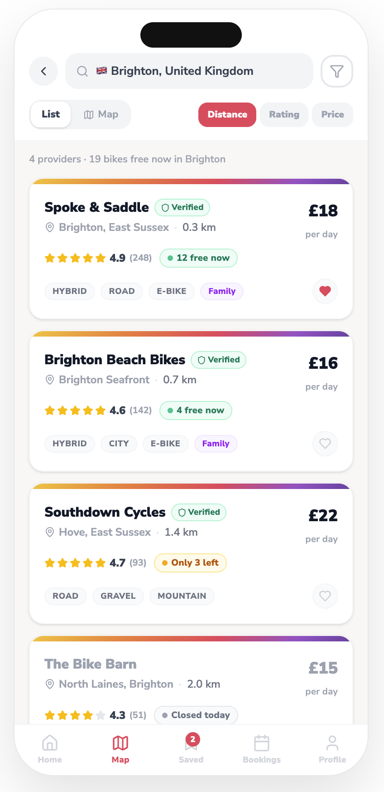

Portfolio case study documentation
Dude, Where’s My Bike? Design System
A component library and screen reference for the bike hire app prototype.
Built from the uploaded prototype screenshots, this static GitHub Pages documentation keeps Sophie’s portfolio header intact while showing the app’s real Nunito Sans typography, warm gradient palette, rounded cards, chips, booking patterns and screen flow.

Working prototype
Explore the prototype
This prototype was created in Figma Make as an interactive mobile app product concept. It demonstrates how AI-assisted tools can help move quickly from graphic design brand concepts to product framing and UX flow into a working front-end prototype.